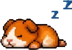
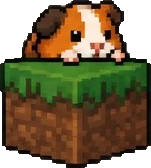

GeckoLib bone name mismatch: the crash no compiler can catch
The build succeeds. The log is clean. The mod loads. Then the entity is drawn for the first time and the game dies, because the model asked for a bone the model file does not have. Nothing between you and that moment can see the mistake, and this is why.
This happened to me on a port of Capybara by 39Choko, and I kept the broken jar, so everything below is measured rather than remembered.
What the mistake looks like
The renderer asked for a bone called saddleParts. In the model file that bone is called saddle. That is the whole bug.
Both names are correct Java. Both compile. The name lives inside a string literal, and a string literal is just characters to the compiler. It has no idea one of them is supposed to correspond to a key in a .geo.json file sitting somewhere else in the jar.
Why it survives every gate you already have. A resource diff compares files and both files are present and unchanged. A build passes because the syntax is fine. A load test passes because nothing reads the model until something is rendered. The mod is installed, the log says it initialised, and it is still broken.
What actually happens at runtime
GeckoLib's AnimationProcessor.getBone returns null for a name the loaded model does not contain. It does not throw, and it does not warn. The null travels back into your renderer, which then does what renderers do with it.
The detail that makes this loud instead of intermittent: the renderer runs every frame. There is no rare code path and no unlucky timing. The first time that entity enters view, the exception fires, and it keeps firing.
So the failure is simultaneously invisible before release and impossible to miss after it. That combination is what makes it expensive.
Why "check your spelling" is not an answer
It is the advice you will find on every thread about this, and it is correct, and it is useless. It assumes you know which name is wrong, in a jar that might have a dozen models and a hundred bones between them. Spotting a mismatch by reading is exactly the task humans are worst at.
The mismatch is also frequently not a typo. Mine came from a rename: the model file used one convention and the code kept an older one. Nobody misspelled anything. The two files simply drifted, which is what files do when a mod moves between versions or loaders.
How to check a jar before you ship it
You need two lists and a comparison: every bone name your compiled code asks for, and every bone name the model file actually defines. Neither list requires running the game.
1. Pull the names out of the bytecode. The names your code requests are string constants in the compiled class, so javap can read them straight out without any source:
unzip -o yourmod.jar -d unpacked
javap -p -c unpacked/path/to/YourEntityModel.class | grep "// String"Every bone name you pass to getBone shows up in that output as a string constant.
2. Pull the names out of the model file. The bones in a .geo.json are objects with a name key, nested to whatever depth the rig has, so walk it:
import json
def bone_names(node):
if isinstance(node, dict):
if isinstance(node.get("name"), str):
yield node["name"]
for value in node.values():
yield from bone_names(value)
elif isinstance(node, list):
for value in node:
yield from bone_names(value)
model = json.load(open("unpacked/assets/yourmod/geo/your_model.geo.json"))
print(sorted(set(bone_names(model))))3. Compare them. Anything requested that is not defined is the bug, and you have its exact name before a single frame is rendered.
What it actually printed
Not a summary of what it printed. This is the output, from running the check just now against both jars, the one I shipped and the one I kept broken on purpose:
======================================================================
BROKEN capymod-1.20.1-1.2.BROKEN.jar
models found : 1 -> capybara.geo.json
bones defined : 11 -> body, ear1, ear2, head, head2, leg1,
leg2, leg3, leg4, legs, saddle
requested + found : 0
FAIL: asks for a bone the model does not have
asks for 'saddleParts' | model has 'saddle' | in CapybaraModel.class
======================================================================
FIXED capymod-1.20.1-1.2.jar
models found : 1 -> capybara.geo.json
bones defined : 11
requested + found : 1 -> saddle
OK: zero mismatchesTwo things worth noticing. The broken jar names the wrong bone and then lists the eleven that do exist, so the correct one is sitting right there to read: you do not go hunting. And the fixed jar reports one bone requested, one found, which is the boring output you want.
The mod is Capybara by 39Choko, MIT. I am not hosting either jar here, because publishing somebody else's mod is a separate conversation I have not had with them yet. The check above is mine and it runs on any jar you point it at, including yours.
What this check does not do
Being honest about the limits, because a check you trust too much is worse than no check:
- It only sees literal names. A bone name built at runtime by concatenating strings is invisible to it.
- It needs a JDK on the machine, because
javapships with the JDK and not with the runtime. - It proves the names line up. It does not prove the animation is correct, or that the model looks right.
It is a colander, not a proof. It catches one specific class of silent failure completely, and says nothing about any other.
The general shape of the problem
Any identifier that crosses from code into a data file is unchecked by definition: bone names, animation names, texture paths, sound events, model keys. The compiler stops at the edge of the language, and the mistake lives one step past that edge.
So the question worth asking of a mod is not "does it build". It is "which of its strings are secretly references, and what verifies them". On a port that question matters more than usual, because a port is a rebuild, and rebuilds are exactly when the two sides drift.
If you would rather not do this yourself.
I port, backport and revive Minecraft mods, and Forge 1.20.1 is where I work most. This check now runs against every jar I build, before anything is launched, along with four other structural ones.
Related. This is one of several failures that pass every automatic gate. The rest are in what actually breaks when you port a Fabric mod to Forge 1.20.1, and if you are weighing up paying somebody, what a mod port costs, and why explains where the hours actually go.